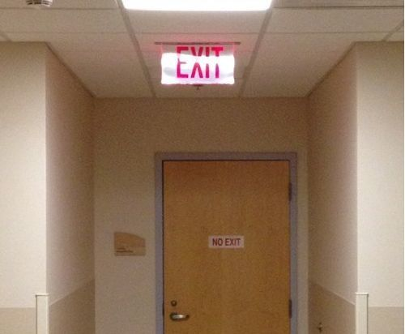

Hearing the phrase, “I validated it” , it makes me want to go back in time, when I started Leancamp, find myself on the streets of London, throw my younger self to the pavement in a dark Camden alley, and step on my face with a trendy leather army boot.
I’ll be amazed to see my future self, standing there. Well, standing there on my head.
My future self will lift his foot off my cheek and cross his arms. Future Me, with his practical short haircut, will explain how annoying it is to have to go back in time to save so many failed startups, all because the term ‘validation’ got mixed up.
Let me explain why saying “I validated this” hurts your credibility.
Nowadays, “I validated that” is a meaningless phrase. It hides the actual evidence, the actual validation, behind a buzzword that anyone can (and does) say.
That means to an investor at a pitch day, it’s worse than meaningless. It’s damaging.

In most cases, saying ‘validation’ means they spoke to some potential customers who said it was a good idea. In others, it means they built a landing page and got some email sign ups. Or they gave a potential customer a list of 10 features that they’d never use and said, choose your favourite three.
These things are not validation.
Rarely does ‘validation’ mean that money exchanged hands, or a potential customer made a real commitment.
Rarely does ‘validation’ mean some form of marketing was established, or a product was used.
Communicating Validated Learning
If you’re truly validating something you learned, then say what it was. (Hint: it’s not your whole business model.) And rather than say ‘validated’, say what you mean. It’s so much more helpful for you and your audience.
“We spoke to 20 freelance graphic designers, and learned that 8 of them actively try new workflow ideas every month or so.”
“We set up Facebook events in a bunch of different cities, and Lyon, Munich and Vienna got more than 500 RSVPs each.”
“We shared beta access with a hundred brand managers, and a month later 60% were still using it every week.”
“We got an order.”
“A distributor agreed to add our product to their newsletter next month.”
“A procurement manager we spoke to was so excited, they’ve started the process of getting us on their supplier list.”
See how those sound more impressive, honest and authoritative?
The people who get real validation, they never say ‘validation,’ they say what they learned and how they learned it. They talk about real commitment from customers, and they think in terms of evidence.
What validation really means
The whole point of the validation concept in Lean Startup methodology is to learn now what will be costly to learn later. It’s to learn if your idea won’t work now, before you go too far down that road.
It’s worth going back to the core concept, Validated Learning, as defined by Eric Ries:
Validation comes in the form of data that demonstrates that the key risks in the business have been addressed by the current product.
Most people treat it like a check-box though — to “get validation.” They look for anything that could confirm their belief that they’re on the right track and plod on naively.
If you’re convinced you’re on the right track, that’s fine. Just move forward! But if you’re running experiments, the results should be able to change your mind and change your direction.
Instead of wasting your time with pseudo-validation, what validation activity can answer the question, is this actually a bad idea?
Try thinking like a scientist, in terms of invalidation. What should I try so a possible result will cause me to stop or change course? Or think of validated learning - what’s the hypothesis that addreddes a key risk, and what’s the evidence that can disprove the risk?
Please do yourself a favour. Stop thinking about “validation.” That’s good way to give yourself regrets. Instead, think in terms of evidence and invalidation.
It’s like building yourself a time machine, only less work.